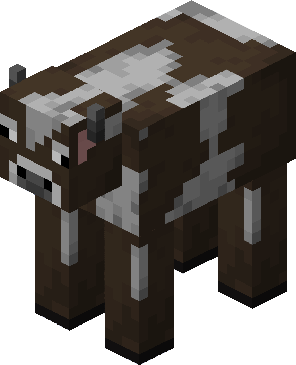
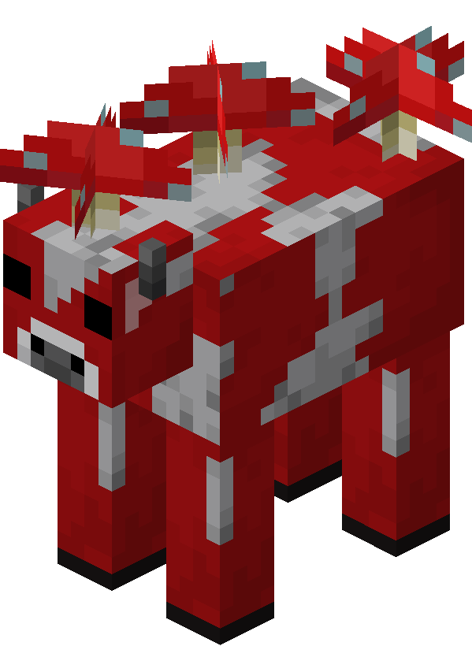
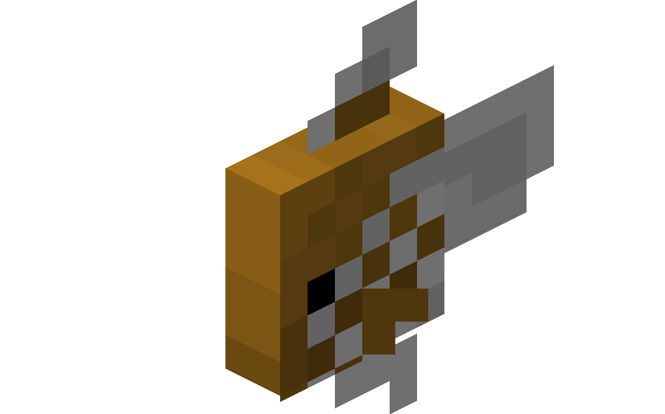
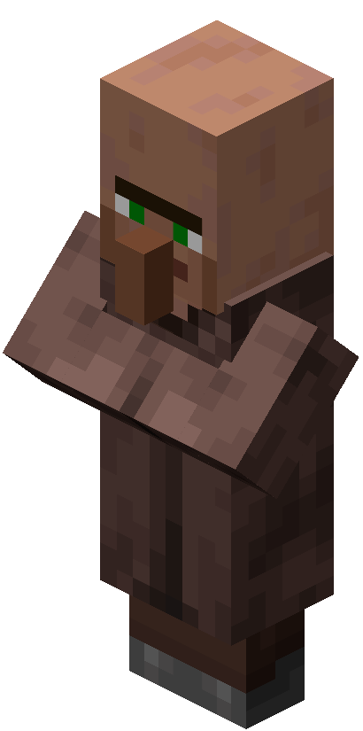
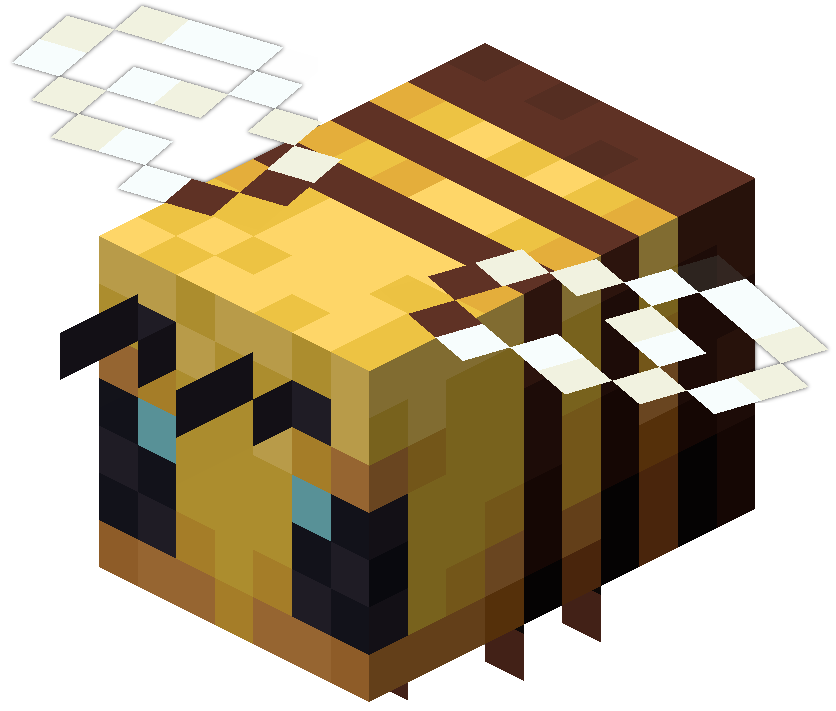

Биомы
| Название (на русском) | ID | Описание | Издания |
|---|---|---|---|
| Заснеженные равнины | minecraft:snowy_plains | Равнины, покрытые снегом. | Java, Bedrock |
| Ледяные пики | minecraft:ice_spikes | Биом с высокими ледяными пирамидами. | Java, Bedrock |
| Заснеженная тайга | minecraft:snowy_taiga | Тайга, покрытая снегом. | Java, Bedrock |
| Глубокий замёрзший океан | minecraft:deep_frozen_ocean | Глубокий океан, покрытый льдом. | Java, Bedrock |
| Замёрзший океан | minecraft:frozen_ocean | Океан, покрытый льдом. | Java, Bedrock |
| Горная роща | minecraft:mountain_grove | Горный биом с рощей деревьев. | Java, Bedrock |
| Снежные склоны | minecraft:snowy_slopes | Снежные горные склоны. | Java, Bedrock |
| Зубчатые вершины | minecraft:jagged_peaks | Высокие зубчатые горы. | Java, Bedrock |
| Оледенелые вершины | minecraft:frozen_peaks | Оледеневшие горные вершины. | Java, Bedrock |
| Замёрзшая река | minecraft:frozen_river | Река, покрытая льдом. | Java, Bedrock |
| Заснеженный пляж | minecraft:snowy_beach | Пляж, покрытый снегом. | Java, Bedrock |
| Тайга | minecraft:taiga | Хвойный лес с елями. | Java, Bedrock |
| Подзолистая сосновая тайга | minecraft:old_growth_pine_taiga | Тайга с большими соснами. | Java, Bedrock |
| Подзолистая еловая тайга | minecraft:old_growth_spruce_taiga | Тайга с большими елями. | Java, Bedrock |
| Холодный океан | minecraft:cold_ocean | Океан с холодной водой. | Java, Bedrock |
| Глубокий холодный океан | minecraft:deep_cold_ocean | Глубокий океан с холодной водой. | Java, Bedrock |
| Горные луга | minecraft:mountain_meadow | Луга среди гор. | Java, Bedrock |
| Выветренные холмы | minecraft:windswept_hills | Холмы с сильным ветром. | Java, Bedrock |
| Выветренный лес | minecraft:windswept_forest | Лес с сильным ветром. | Java, Bedrock |
| Выветренные гравийные холмы | minecraft:windswept_gravelly_hills | Гравийные холмы с сильным ветром. | Java, Bedrock |
| Каменистый берег | minecraft:stony_shore | Каменистый берег океана. | Java, Bedrock |
| Равнины | minecraft:plains | Открытые просторы с травой и цветами. | Java, Bedrock |
| Подсолнечниковые равнины | minecraft:sunflower_plains | Равнины с подсолнухами. | Java, Bedrock |
| Лес | minecraft:forest | Плотный лес с разнообразными деревьями. | Java, Bedrock |
| Цветочный лес | minecraft:flower_forest | Лес с большим количеством цветов. | Java, Bedrock |
| Вишнёвая роща | minecraft:cherry_grove | Роща с вишнёвыми деревьями. | Java, Bedrock |
| Березняк | minecraft:birch_forest | Лес, заполненный берёзами. | Java, Bedrock |
| Многолетний березняк | minecraft:old_growth_birch_forest | Березняк с большими деревьями. | Java, Bedrock |
| Тёмный лес | minecraft:dark_forest | Биом с большими темными дубами и грибами-гигантами. | Java, Bedrock |
| Болото | minecraft:swamp | Влажный биом с грязью и лианами. | Java, Bedrock |
| Мангровое болото | minecraft:mangrove_swamp | Болото с мангровыми деревьями. | Java, Bedrock |
| Джунгли | minecraft:jungle | Густой тропический лес с большими деревьями и лианами. | Java, Bedrock |
| Бамбуковые джунгли | minecraft:bamboo_jungle | Джунгли с бамбуком. | Java, Bedrock |
| Редеющие джунгли | minecraft:sparse_jungle | Разреженная версия джунглей. | Java, Bedrock |
| Грибные поля | minecraft:mushroom_fields | Остров, полностью покрытый грибами. | Java, Bedrock |
| Океан | minecraft:ocean | Обширная водная поверхность. | Java, Bedrock |
| Глубокий океан | minecraft:deep_ocean | Глубокая часть океана. | Java, Bedrock |
| Умеренный океан | minecraft:lukewarm_ocean | Океан с умеренной температурой воды. | Java, Bedrock |
| Глубокий умеренный океан | minecraft:deep_lukewarm_ocean | Глубокий океан с умеренной температурой воды. | Java, Bedrock |
| Каменистые вершины | minecraft:stony_peaks | Каменистые горные вершины. | Java, Bedrock |
| Река | minecraft:river | Протока воды между биомами. | Java, Bedrock |
| Пляж | minecraft:beach | Полоса песка у воды. | Java, Bedrock |
| Бледный сад | minecraft:pale_garden | Сад с бледными цветами. | Java, Bedrock |
| Пустыня | minecraft:desert | Безводный биом с песчаными дюнами. | Java, Bedrock |
| Саванна | minecraft:savanna | Открытый биом с акациями и высокой травой. | Java, Bedrock |
| Плато саванны | minecraft:savanna_plateau | Плато в саванне. | Java, Bedrock |
| Выветренная саванна | minecraft:windswept_savanna | Саванна с сильным ветром. | Java, Bedrock |
| Пустошь | minecraft:badlands | Жаркий биом с красной почвой. | Java, Bedrock |
| Лесистая пустошь | minecraft:wooded_badlands | Пустошь с деревьями. | Java, Bedrock |
| Выветренная пустошь | minecraft:eroded_badlands | Разрушенная пустошь. | Java, Bedrock |
| Тёплый океан | minecraft:warm_ocean | Океан с тёплой водой. | Java, Bedrock |
| Пышные пещеры | minecraft:lush_caves | Подземный биом с растительностью. | Java, Bedrock |
| Карстовая пещера | minecraft:dripstone_caves | Пещера с сталактитами и сталагмитами. | Java, Bedrock |
| Тёмные глубины | minecraft:deep_dark | Биом с древним городом. | Java, Bedrock |
| Пустоши Нижнего мира | minecraft:nether_wastes | Основной биом Нижнего мира. | Java, Bedrock |
| Базальтовые дельты | minecraft:basalt_deltas | Биом с базальтовыми образованиями. | Java, Bedrock |
| Искажённый лес | minecraft:warped_forest | Лес с искажёнными деревьями. | Java, Bedrock |
| Багровый лес | minecraft:crimson_forest | Лес с багровыми деревьями. | Java, Bedrock |
| Долина песка душ | minecraft:soul_sand_valley | Биом с песком душ. | Java, Bedrock |
| Край | minecraft:the_end | Измерение с пурпурными островами. | Java, Bedrock |
| Островки Края | minecraft:small_end_islands | Маленькие острова в измерении Края. | Java |
| Равнины Края | minecraft:end_midlands | Равнины в измерении Края. | Java |
| Возвышенности Края | minecraft:end_highlands | Возвышенности в измерении Края. | Java |
| Окраины Края | minecraft:end_barrens | Безжизненные земли в измерении Края. | Java |
| Пустота | minecraft:the_void | Биом без генерации блоков. | Java |
Структуры
| Название (на русском) | ID | Описание |
|---|---|---|
| Древний город | minecraft:ancient_city | Тёмные глубины. Длинные коридоры из глубинного сланца, ведущие к центральному сооружению с похожей на портал структурой, обрамлённой укреплённым глубинным сланцем и напоминающей голову хранителя. |
| Заброшенная шахта | minecraft:mineshaft | Любой биом Верхнего мира, кроме тёмных глубин. Сеть подземных туннелей с сильно повреждённой железной дорогой, на которой иногда стоят вагонетки с сундуками. |
| Камеры испытаний | minecraft:trial_chambers | Любой биом Верхнего мира, кроме тёмных глубин. Множество комнат, построенных из разных видов меди и туфа и соединяемых коридорами. |
| Клад | minecraft:buried_treasure | Пляж, Заснеженный пляж, Каменистый берег. Зарытый сундук с ценными ресурсами, который можно найти на побережье. |
| Крепость | minecraft:stronghold | Любой биом Верхнего мира. Лабиринт из каменного кирпича со множеством комнат, в одной из которых расположен чаще всего закрытый портал Края. |
| Руины былых времён | minecraft:ruins_of_old | Джунгли, Многолетний березняк, Многолетняя сосновая тайга, Многолетняя еловая тайга, Заснеженная тайга, Тайга. Группа разрушенных сооружений, похожая на древнее поселение. |
| Аванпост разбойников | minecraft:raiders_outpost | Равнины, Пустыня, Саванна, Тайга, Заснеженные равнины и др. Группа структур, среди которых доминирующее положение занимает сторожевая башня. |
| Деревня | minecraft:village | Равнины, Луг, Пустыня, Саванна, Тайга, Заснеженные равнины и др. Поселение с жилыми домами и хозяйственными строениями. |
| Заброшенная деревня | minecraft:abandoned_village | Равнины, Луг, Пустыня, Саванна, Тайга, Заснеженные равнины и др. Обветшалая деревня, населённая зомби-жителями. |
| Иглу | minecraft:igloo | Заснеженные равнины, Заснеженная тайга, Заснеженные склоны. Снежное жилище с печью, кроватью и редстоун-факелом внутри. |
| Лесной особняк | minecraft:woodland_mansion | Тёмный лес. Гигантское здание, построенное из тёмнодубовых досок и имеющее булыжный фундамент. |
| Хижина ведьмы | minecraft:witch_hut | Болото. Небольшое свайное жилище из древесины, внутри которого находятся котёл и верстак. |
| Храм в джунглях | minecraft:jungle_temple | Джунгли. Заросшее булыжное сооружение с двумя сундуками, один из которых защищён ловушкой. |
| Храм в пустыне | minecraft:desert_pyramid | Пустыня. Большая пирамидальная структура из песчаника, под которой спрятана гробница с четырьмя сундуками и ловушкой. |
| Разрушенный портал Нижнего мира | minecraft:ruined_portal | Любой биом Верхнего мира, кроме тёмных глубин. Частично разрушенный портал Нижнего мира разных форм и размеров. |
| Затонувший корабль | minecraft:shipwreck | Глубокий океан, Океан и др. Ветхое деревянное судно, содержащее до трёх сундуков с добычей. |
| Подводная крепость | minecraft:underwater_ruin | Глубокий океан, Глубокий замёрзший океан и др. Огромный призмариновый храм, охраняемый стражами. |
| Подводные руины | minecraft:ocean_ruins | Глубокий океан, Океан и др. Группа мелких разрушенных строений из каменных кирпичей или песчаника. |
| Крепость Нижнего мира | minecraft:nether_fortress | Любой биом Нижнего мира. Большое сооружение из кирпичей Нижнего мира в виде комплекса высоких башен. |
| Развалины бастиона | minecraft:bastion_remnant | Пустоши Нижнего мира, Багровый лес и др. Руины огромного сооружения, похожего на замок, построенного из чернокаменных блоков. |
| Ископаемые останки Нижнего мира | minecraft:nether_fossils | Долина песка душ. Вариант обычных ископаемых останков, но более разрушенный и полностью состоящий из костяных блоков. |
| Город Края | minecraft:end_city | Край. Разветвлённая сеть высоких башен, построенных из пурпурных блоков, каменных кирпичей Края и фиолетового стекла. |
Мобы
| Название | Биомы обитания | Лут и шанс | Здоровье | Фото |
|---|---|---|---|---|
| Летучая мышь | Пещеры | Нет |
|
|
| Кошка | Деревни, Хижины ведьм | Нить (100%) |
|
 |
| Курица | Любой биом Верхнего мира | Перья (100%), Сырая курица (100%), Яйцо (периодически) |
|
 |
| Треска | Океан | Сырая треска (100%), Кость (5%) |
|
|
| Корова | Любой биом Верхнего мира | Кожа (100%), Сырая говядина (100%) |
|
 |
| Лиса | Тайга, Снежная тайга | Перо (5%), Кроличья лапка (2%) |
|
|
| Лошадь | Равнины, Саванна | Кожа (100%) |
|
|
| Овца | Любой биом Верхнего мира | Шерсть (100%), Сырая баранина (100%) |
|
 |
| Грибная корова | Грибной остров | Красные грибы (100%), Кожа (100%) |
|
 |
| Оцелот | Джунгли | Нет |
|
 |
| Попугай | Джунгли | Перья (100%) |
|
 |
| Свинья | Любой биом Верхнего мира | Сырая свинина (100%) |
|
 |
| Кролик | Пустыня, Тайга | Кроличья лапка (10%), Кроличья шкура (100%) |
|
 |
| Лосось | Реки, Океан | Сырой лосось (100%) |
|
|
| Снежный голем | Создается игроком | Снежки (100%) |
|
|
| Спрут | Океан | Инк (100%) |
|
|
| Страйдер | Нижний мир | Нога страйдера (100%) |
|
|
| Тропическая рыба | Океан | Нет |
|
 |
| Черепаха | Пляжи | Панцирь черепахи (100%) |
|
 |
| Деревенский житель | Деревни | Нет |
|
 |
| Странствующий торговец | Любой биом | Эмerald (при убийстве) |
|
|
| Аксолотль | Подземные озёра | Нет |
|
 |
| Лягушка | Лес, Пустоши | Нет |
|
|
| Тихоня | Любой биом | Желе (100%) |
|
|
| Верблюд | Пустыня | Кожа (100%) |
|
|
| Нюхач | Любой биом | Нет |
|
|
| Броненосец | Саванна | Нет |
|
|
| Пчела | Лес, Саванна | Мед (100%) |
|
 |
| Пещерный паук | Пещеры | Нить (100%), Яд (25%) |
|
|
| Дельфин | Океан | Рыба (100%) |
|
 |
| Странник края | Край | Порошок звезды (100%) |
|
 |
| Железный голем | Создается игроком | Железо (100%) |
|
.png) |
| Лама | Саванна | Шерсть (100%) |
|
|
| Панда | Бамбуковые леса | Нет |
|
|
| Пиглин | Нижний мир | Золотые предметы (различные) |
|
 |
| Белый медведь | Снежные биомы | Мясо (100%) |
|
|
| Иглобрюх | Океан | Ядовитая шипы (100%) |
|
|
| Паук | Любой биом | Нить (100%), Яд (25%) |
|
|
| Волк | Лес | Нет |
|
 |
| Зомбифицированный пиглин | Нижний мир | Золотые предметы (различные) |
|
|
| Коза | Горы | Молоко (100%) |
|
|
| Ифрит | Крепости Нижнего мира | Огненный стержень (50%) |
|
|
| Крипер | Любой биом Верхнего мира | Порох (100%) |
|
 |
| Утопленник | Океан | Трофеи утопленника (100%) |
|
 |
| Страж | Подводные крепости | Призмариновые кристаллы (100%) |
|
|
| Чешуйница | Нижний мир | Чешуя (100%) |
|
|
| Гаст | Нижний мир | Слезы гаста (100%), Порох (30%) |
|
|
| Хоглин | Нижний мир | Сырая говядина (100%) |
|
|
| Бриз | Нижний мир | Крыло бриза (100%) |
|
 |
| Зомби | Любой биом Верхнего мира | Гнилая плоть (100%), Железный слиток (2.5%) |
|
 |
| Слизень | Любой биом | Слизь (100%) |
|
|
| Фантом | Ночью | Фантомное перо (100%) |
|
 |
| Жестокий пиглин | Нижний мир | Золотые предметы (различные) |
|
 |
| Разоритель | Руины Нижнего мира | Разрушитель (100%) |
|
|
| Шалкер | Крепости Нижнего мира | Голова шалкера (50%) |
|
|
| Скелет | Любой биом Верхнего мира | Кость (100%), Стрела (100%) |
|
|
| Досажатель | Нижний мир | Нагреватель (100%) |
|
|
| Ведьма | Любой биом Верхнего мира | Зелья (различные) |
|
|
| Зоглин | Нижний мир | Кожа (100%) |
|
|
| Хранитель | Подводные храмы | Прима-жемчуг (100%) |
|
|
| Эндер Дракон | Край | Яйцо дракона (100%, при первом убийстве), 12000 опыта |
|
 |
| Визер | Создается игроком | - |
|
 |
Правила игры (Gamerules)
| Название | Описание | Стандартное значение | Тип |
|---|---|---|---|
| announceAdvancements | Должны ли достижения объявляться в чате. | true | bool |
| blockExplosionDropDecay | Должны ли дропы блоков падать со всех блоков (false) или случайно (true) в зависимости от расстояния до центра взрыва блока (например, при использовании кровати в измерениях, отличных от Оверворлда). | true | bool |
| commandBlocksEnabled | Должны ли командные блоки быть включены в игре. | true | bool |
| commandBlockOutput | Должны ли командные блоки уведомлять админов, когда они выполняют команды. | true | bool |
| commandModificationBlockLimit | Управляет максимальным количеством изменяемых блоков при использовании команд /clone, /fill или /fillbiome. | 32768 | int |
| disableElytraMovementCheck | Должен ли сервер пропускать проверку скорости игрока, когда игрок использует эльтру. Часто помогает устранить подергивание из-за лагов в мультиплеере. | false | bool |
| disablePlayerMovementCheck | Должен ли сервер пропускать проверку скорости игрока. | false | bool |
| disableRaids | Отключены ли набеги. | false | bool |
| doDaylightCycle | Должен ли цикл дня и фазы Луны прогрессировать. | true | bool |
| doEntityDrops | Должны ли не-мобовые сущности иметь дропы. | true | bool |
| doFireTick | Должна ли огонь распространяться и естественным образом гаснуть. | true | bool |
| doInsomnia | Должны ли фантомы появляться ночью. | true | bool |
| doImmediateRespawn | Должны ли игроки возрождаться сразу без экрана смерти. | false | bool |
| doLimitedCrafting | Должны ли игроки создавать только те рецепты, которые они разблокировали. | false | bool |
| doMobLoot | Должны ли мобы выбрасывать предметы и шары опыта. | true | bool |
| doMobSpawning | Должны ли мобы естественно появляться. Не влияет на спавнеры монстров. | true | bool |
| doPatrolSpawning | Должны ли патрули появляться. | true | bool |
| doTileDrops | Должны ли блоки иметь дропы. | true | bool |
| doTraderSpawning | Должны ли бродячие торговцы появляться. | true | bool |
| doVinesSpread | Должны ли лианы распространяться на другие блоки. Каве-лианы, слезоточивые лианы и крутящиеся лианы не затрагиваются. | true | bool |
| doWeatherCycle | Должна ли погода меняться естественным образом. Команда /weather всё ещё может менять погоду. | true | bool |
| doWardenSpawning | Должны ли стражи появляться. | true | bool |
| drowningDamage | Должен ли игрок получать урон при утоплении. | true | bool |
| enderPearlsVanishOnDeath | Управляет тем, исчезают ли брошенные жемчуга эндеров при смерти игрока. | true | bool |
| fallDamage | Должен ли игрок получать урон от падения. | true | bool |
| fireDamage | Должен ли игрок получать урон от огня, лавы, костров или магмы. | true | bool |
| forgiveDeadPlayers | Заставляет нейтральных мобов переставать злиться, когда целевой игрок умирает поблизости. | true | bool |
| freezeDamage | Должен ли игрок получать урон внутри порошкового снега. | true | bool |
| globalSoundEvents | Должны ли некоторые звуковые события быть слышны всем игрокам независимо от местоположения. | true | bool |
| functionCommandLimit | Максимальное количество команд, которые могут быть выполнены командой /function за раз. | 10000 | int |
| keepInventory | Должен ли игрок сохранять предметы и опыт в инвентаре после смерти. | false | bool |
| lavaSourceConversion | Разрешает ли образование новых источников лавы. | false | bool |
| logAdminCommands | Должны ли команды администраторов записываться в журнал сервера. | true | bool |
| maxCommandChainLength | Максимальная длина цепочки команд, которые могут быть выполнены за один тик. Применяется к командным блокам и функциям. | 65536 | int |
| maxCommandForkCount | Неизвестно (не документировано). | 65536 | int |
| maxEntityCramming | Максимальное количество толкаемых сущностей, которое может толкать моб или игрок, прежде чем получить 6♥♥♥ урона от тесноты за полсекунды. Значение 0 или ниже отключает правило. Влияет на игроков (кроме режима Spectator), мобов (кроме летучих мышей), а также лодки и вагонетки. | 24 | int |
| minecartMaxSpeed | Максимальная скорость, которой могут достигать вагонетки. | 8 | int |
| mobExplosionDropDecay | Должны ли дропы блоков падать со всех блоков (false) или случайно (true) в зависимости от расстояния до центра взрыва моба (например, взрыв крипера). | true | bool |
| mobGriefing | Должны ли криперы, зомби, эндермены, гасты, витеры, эндракристаллы и другие мобы изменять блоки, а также подбирать предметы. | true | bool |
| naturalRegeneration | Должен ли игрок регенерировать здоровье естественным путём, если его уровень голода достаточно высок (не влияет на внешнее исцеление, например, золотыми яблоками или эффектом Регенерации). | true | bool |
| playersNetherPortalCreativeDelay | Управляет количеством тактов, которые игрок в режиме Creative должен ждать в портале Нether для перемещения между измерениями. | 1 | int |
| playersNetherPortalDefaultDelay | Управляет количеством тактов, которые игрок в режимах Survival или Adventure должен ждать в портале Нether для перемещения между измерениями. | 80 | int |
| playersSleepingPercentage | Процент игроков в Оверворлде, который должен лечь спать, чтобы пропустить ночь. Значение 0 или меньше позволит пропустить ночь одному игроку, а значение больше 100% сделает невозможным пропуск nightskip. | 100 | int |
| projectilesCanBreakBlocks | Должны ли снаряды (например, трезубец) ломать блоки (например, направленные каменные сосульки). | true | bool |
| pvp | Должны ли игроки иметь возможность драться друг с другом. | true | bool |
| randomTickSpeed | Как часто происходит случайный блочный тик (например, рост растений, увядание листьев и т.д.) на каждый секционный чанк за игровой тик. Значение 0 или ниже отключает случайные тики, более высокие числа увеличивают частоту тиков. Высокие значения делают рост и увядание мгновенными. | 3 | int |
| recipesUnlock | Должен ли игрок собирать предметы для разблокировки рецептов в книге рецептов. | true | bool |
| reducedDebugInfo | Должна ли отладочная информация показывать всю или сокращённую информацию, а также должны ли работать эффекты F3 + B (хитбоксы сущностей) и F3 + G (границы чанков). | false | bool |
| respawnBlocksExplode | Предотвращает взрывы кроватей/точек возрождения в других измерениях. | true | bool |
| sendCommandFeedback | Должен ли вывод команд, выполненных игроком, отображаться в чате. Также влияет на то, хранят ли командные блоки свой выходной текст по умолчанию. | true | bool |
| showBorderEffect | Должны ли блоки границы создавать красные частицы, поднимающиеся вверх, чтобы указывать на границу. | true | bool |
| showCoordinates | Должны ли координаты игрока отображаться. | true | bool |
| showDeathMessages | Должны ли сообщения о смерти появляться в чате, когда игрок умирает. Также влияет на то, отправляются ли сообщения владельцу питомца, когда питомец умирает. | true | bool |
| showTags | Скрывает списки "Можно разместить на" и "Можно разрушить" в описании предметов, а также индикаторы блокировки предметов. | true | bool |
| snowAccumulationHeight | Максимальное количество слоёв снега, которые могут накапливаться на каждом блоке. | 1 | int |
| spawnChunkRadius | Управляет радиусом спавн-чанков. | 2 | int |
| spawnRadius | Количество блоков вокруг мировых координат спавна, где игрок появляется при первом входе на сервер или после смерти без личной точки возрождения. Не влияет на серверы, где режим игры установлен как Adventure. | 10 | int |
| spectatorsGenerateChunks | Должны ли игроки в режиме Spectator генерировать чанки. | true | bool |
| tntExplodes | Должна ли ТНТ взрываться после активации. | true | bool |
| tntExplosionDropDecay | Должны ли дропы блоков падать со всех блоков (false) или случайно (true) в зависимости от расстояния до центра взрыва ТНТ. | false | bool |
| universalAnger | Должны ли разозлённые нейтральные мобы атаковать любого поблизости игрока, а не только того, кто их разозлил. Работает лучше, если параметр forgiveDeadPlayers выключен. | false | bool |
| waterSourceConversion | Разрешает ли образование новых источников воды. | true | bool |
| Название | ID | Описание | Высота |
|---|---|---|---|
| Угольная руда | minecraft:coal_ore | Располагается в горных и подземных биомах. Основной источник угля. | Y 0 - 320 (чаще всего на Y 95) |
| Железная руда | minecraft:iron_ore | Используется для крафта железных предметов. Встречается в пещерах и горах. | Y -64 - 320 (чаще всего на Y 15) |
| Медная руда | minecraft:copper_ore | Используется для крафта блоков меди и громоотводов. | Y -16 - 112 (чаще всего на Y 48) |
| Золотая руда | minecraft:gold_ore | Используется для создания золотых инструментов и брони. | Y -64 - 32 (чаще всего на Y -16) |
| Глубинная золотая руда | minecraft:deepslate_gold_ore | Редкий вид золотой руды, встречающийся в глубоких слоях. | Y -64 - 32 (чаще всего на Y -16) |
| Лазуритовая руда | minecraft:lapis_ore | Источник лазурита для зачарования. | Y -64 - 64 (чаще всего на Y 0) |
| Редстоуновая руда | minecraft:redstone_ore | Используется в механизмах. | Y -64 - 16 (чаще всего на Y -59) |
| Алмазная руда | minecraft:diamond_ore | Источник алмазов, необходимых для брони, инструментов и зачарования. | Y -64 - 16 (чаще всего на Y -59) |
| Изумрудная руда | minecraft:emerald_ore | Самая редкая руда, используется для торговли с жителями. | Y -16 - 320 (чаще всего на Y 236) |
| Кварцевая руда | minecraft:nether_quartz_ore | Добывается в Нижнем мире. Источник кварца. | Встречается в Нижнем мире на любой высоте |
| Древний обломок | minecraft:ancient_debris | Используется для создания незеритовых слитков. | Y 8 - 22 (чаще всего на Y 15) |
| Название | ID | Описание |
|---|---|---|
| Скорость | speed | Увеличит скорость передвижения и ширину обзора. |
| Замедление | slowness | Снижает скорость и ширину обзора. |
| Проворность | haste | Можно ломать блоки быстрее на 20 процентов с каждым уровнем. |
| Усталость | mining_fatigue | Блоки разрушаются медленнее на 20 процентов. |
| Сила | strength | Увеличение урона с каждым уровнем. |
| Исцеление | instant_health | Быстрое лечение за каждый такт времени. |
| Быстрый урон | instant_damage | 1.5 сердца урона за определенный срок. |
| Прыгучесть | jump_boost | Увеличивает высоту прыжка. |
| Тошнота | nausea | Искажает картинку в игре. |
| Регенерация | regeneration | Каждые 5 секунд восстанавливает 1 единицу здоровья. |
| Сопротивление | resistance | Снижает получаемый урон. |
| Стойкость огню | fire_resistance | Снижает урон от огня. |
| Подводное дыхание | water_breathing | Снижает потери воздуха под водой. |
| Невидимость | invisibility | Игрок становится прозрачным. |
| Слепота | blindness | Игрок не может бегать и видит только в радиусе 3-х блоков. |
| Ночное зрение | night_vision | Максимальная яркость зрения в любом месте. |
| Голод | hunger | Скорость снижения уровня голода увеличивается. |
| Слабость | weakness | Урон, наносимый главным героем, снижен. |
| Отравление | poison | Каждые 2,5 секунды здоровье снижается на 1 единицу. |
| Иссушение | wither | Наносит 1 единицу урона каждые 4 секунды. |
| Прилив здоровья | health_boost | Дополнительные 4 единицы здоровья, которые восстанавливаются. |
| Поглощение | absorption | Дополнительные 4 единицы здоровья, которые не восстанавливаются. |
| Насыщение | saturation | Быстрое восстановление уровня голода. |
| Свечение | glowing | Главный герой будет светиться, даже через стены. |
| Левитация | levitation | Главный герой взлетает на 128 блоков, а потом падает. |
| Удача | luck | Шанс поимки ценных предметов на рыбалке выше. |
| Невезение | unluck | Шанс поимки ценных предметов на рыбалке ниже. |
| Легкое падение | slow_falling | Медленное падение + отсутствие урона от падения. |
| Сила моря | conduit_power | Улучшенное зрение под водой + Увеличенная скорость разрушения блоков под водой + Бесконечный воздух. |
| Грация дельфина | dolphins_grace | Скорость плавания увеличена. |
| Клеймо бедствий | bad_omen | Начало атаки разбойников на деревню. |
| Деревенский герой | hero_of_the_village | Подарки и скидки игроку от деревенских жителей. |
| Тьма | darkness | Около игрока может появляться и исчезать темный туман. |